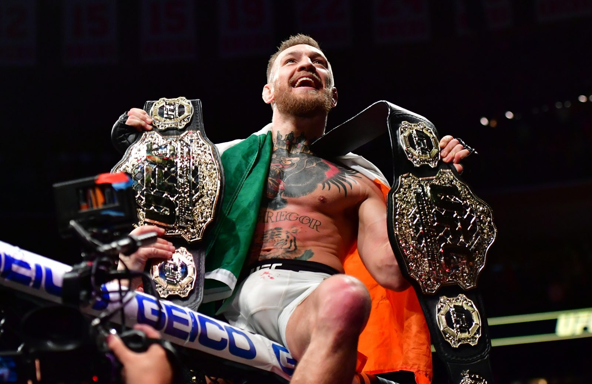
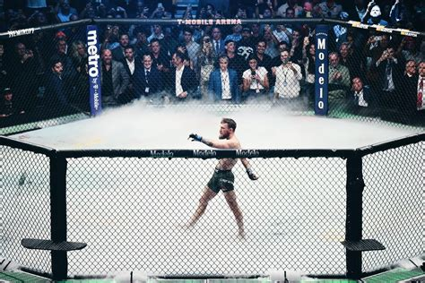
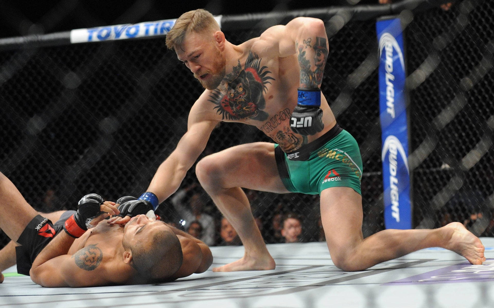
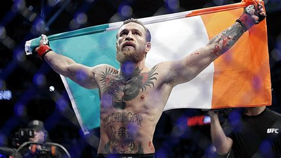

Conor McGregor on irlantilainen vapaaottelija ja yksi kaikkien aikojen tunnetuimmista UFC-tähdistä. Hänestä tuli ensimmäinen ottelija UFC historiassa, joka hallitsi samanaikaisesti kahta painoluokkaa.
McGregor syntyi Dublinissa vuonna 1988 ja työskenteli nuorena putkimiehenä ennen MMA-uraa. Hän on pitkäaikaisessa parisuhteessa Dee Devlinin kanssa ja heillä on useita lapsia. McGregor tunnetaan myös ylellisestä elämäntyylistään, luksusautoista, jahdeista sekä Proper Twelve -viskibrändistä. Hänen persoonansa on itsevarma ja provosoiva, mikä on tehnyt hänestä valtavan mediapersoonan.
McGregor aloitti uransa Irlannin Cage Warriors organisaatiossa, jossa hän voitti featherweight ja lightweight mestaruudet. UFC:ssä hän nousi superstardomiksi tyrmättyään Jose Aldon 13 sekunnissa ja voittamalla myöhemmin Eddie Alvarezin tullakseen double champiksi. Hän otteli myös nyrkkeilyottelun Floyd Mayweatheria vastaan vuonna 2017.



| Tulos | Vastustaja | Tapa | Tapahtuma | Vuosi |
|---|---|---|---|---|
| L | Dustin Poirier | TKO (Doctor Stoppage) | UFC 264 | 2021 |
| L | Dustin Poirier | KO | UFC 257 | 2021 |
| W | Donald Cerrone | TKO | UFC 246 | 2020 |
| L | Khabib Nurmagomedov | Submission | UFC 229 | 2018 |
| W | Eddie Alvarez | TKO | UFC 205 | 2016 |
| W | Nate Diaz | Decision | UFC 202 | 2016 |
| L | Nate Diaz | Submission | UFC 196 | 2016 |
| W | Jose Aldo | KO | UFC 194 | 2015 |
| W | Chad Mendes | TKO | UFC 189 | 2015 |
| W | Dennis Siver | TKO | UFC Fight Night | 2015 |
| W | Dustin Poirier | TKO | UFC 178 | 2014 |
| W | Diego Brandao | TKO | UFC FN Dublin | 2014 |
| W | Max Holloway | Decision | UFC FN | 2013 |
| W | Marcus Brimage | TKO | UFC on Fuel | 2013 |
| W | Ivan Buchinger | KO | Cage Warriors | 2012 |
| W | Dave Hill | Submission | Cage Warriors | 2011 |
| W | Steve O’Keefe | TKO | Cage Contender | 2011 |
| W | Paddy Doherty | TKO | IFC | 2010 |
| L | Joseph Duffy | Submission | Cage Warriors | 2010 |
| W | Connor Dillon | Submission | Battlezone | 2009 |
| W | Mo Taylor | TKO | Battlezone | 2009 |
| W | Gary Morris | TKO | Cage Rage | 2009 |
| W | Stephen Bailey | TKO | Raw Combat | 2009 |
| W | Aron Jahnsen | TKO | Cage Rage | 2008 |
| L | Artemij Sitenkov | Submission | Cage Rage | 2008 |